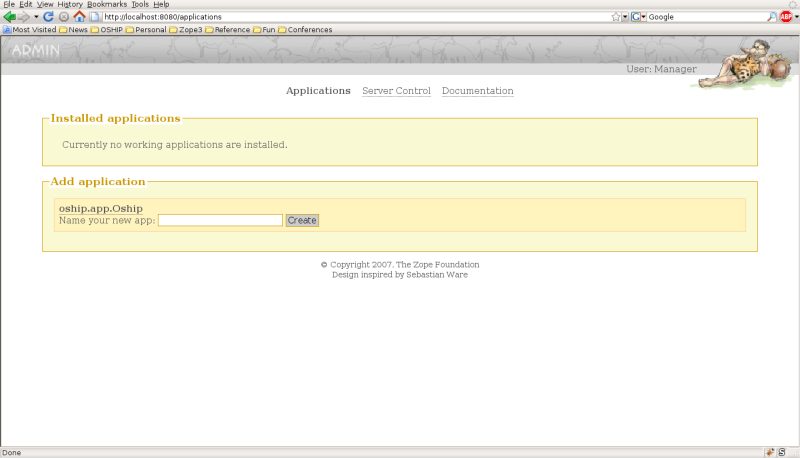
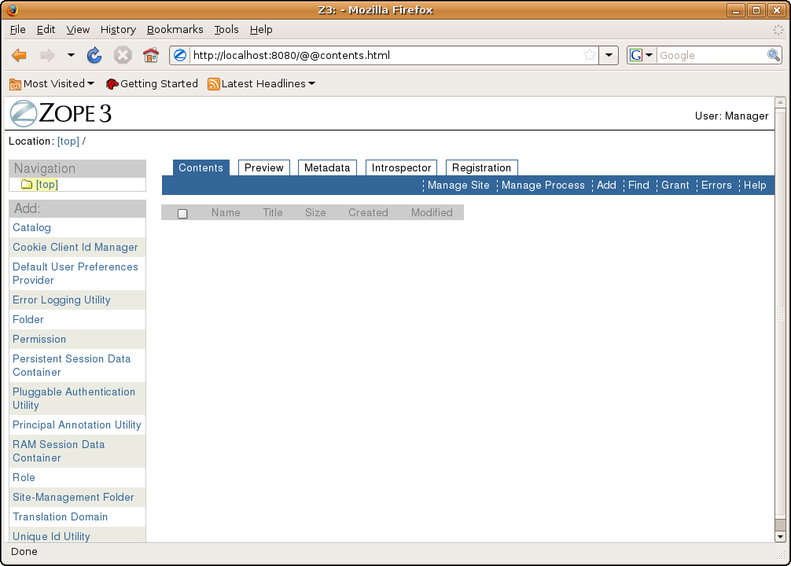

Create Future Proof Healthcare Applications!
(And if you have problems with this, use the
mailing list)
Installing the OSHIP framework on GNU Linux
In the following lines with instructions (in pink), the leading $ represents the tail of your
system prompt. It may be necessary to prefix the commands with 'sudo' when you, using a non-administrator account,
try to install into system-wide Python directories.
Prerequisites
- Python2.5
- OSHIP requires at least Python 2.5; if it is not already installed
on your system, you can download it from http://www.python.org.
We also need Python header files. They can be obtained by something like:
$sudo apt-get install python-dev
- g++
- In order to create Python C extensions a compiler is needed. On Ubuntu, this means installing
the package build-essential:
$sudo apt-get install build-essential
- setuptools
- This package contains the easy_setup command, to make installing the next item real easy.
$wget http://peak.telecommunity.com/dist/ez_setup.py
$sudo python ez_setup.py
- virtualenv
- In order to prevent your OSHIP project interfering with your other never-ending projects,
we advice you to work in separate environments. Virtualenv can be used to create isolated
environments.
$sudo easy_install virtualenv
- subversion
- We currently use subversion (svn) as a version control system in our project. You can probably
install it by means of something like
$sudo apt-get install subversion
Installation steps (tested on Ubuntu 8.04 and 8.10, both with Grok 0.14)
- Let's prepare for the use of buildout; we use it now, and in the future. Buildout makes the process of
creating projects repeatable. For example, it can pinpoint the versions of the software
components used in the project. In order to be able to repeat the building of a specific project
in the distant future, it is vital to have a local copy of the used components. We tuck them away
in the hidden directory .buildout (note the leading dot):
$mkdir ~/.buildout
$cd ~/.buildout
Now use your favorite text editor to create the file default.cfg containing the following:
[buildout]
eggs-directory = /home/<username>/.buildout/eggs
download-directory = /home/<username>/.buildout/downloads
Of course, you have to substitute <username > with your own username.
-
Now create the isolated OSHIP environment and activate it:
$virtualenv ~/oshipenv
$cd ~/oshipenv
$source bin/activate
Check that your system prompt is now prefixed with (oshipenv)
e.g.
(oshipenv)<username>@<machinename>:~/oshipenv$
- Then, install the buildout-machinery.
$easy_install zc.buildout
- We provide you with a buildout recipe in the file buildout.cfg. Get it, and our other source
files, from our subversion server:
svn co http://www.openehr.org/svn/ref_impl_python/TRUNK/oship oship
-
Now it's time for a chat at the coffee machine. Meanwhile, let buildout create your project:
$cd oship
$buildout
All of the required Python eggs will be downloaded and installed.
NOTE: In the past, we saw some errors during these downloads such as unknown
protocols for svn and https but everything seemed to work okay and we
haven't investigated the cause yet.
-
Finally, you have a working OSHIP installation. You can start the server with
$bin/zopectl fg
Note that you need to enter this command from the oship directory.
Verify that the server is up and running by visiting http://localhost:8080 in your browser.
The login link is on the upper right side of the browser window. login=admin password=abc123. Your browser may look something
like this:

Now enter "oship" (without the quotes) into the form to create the OSHIP application. Then change your URL to http://localhost:8080/oship
Now you should have a browser that looks like this:

Installing the OSHIP framework on MS Windows XP & Vista
The original install guide was contributed by Alessandro Torrisi.
Prerequisites
- Python2.5 (tested with version 2.5.2)
- OSHIP requires at least Python 2.5; if it is not already installed
on your system, you can download an installer from http://www.python.org.
We assume it is installed for all users in the default directory C:\python25. You don't need to specify
the full path of the Python binary every time you need it. Just add the directories C:\Python25
and C:\Python25\Scripts to your environment variable %PATH%. See the instructions to do so at:
How do I set or change the PATH system variable
- win32all (tested with build 212)
- The win32all package adds a
number of Windows-specific extensions to Python.
- setuptools (tested with version 0.6c9)
- This package contains the easy_setup command, to make installing the next item real easy.
- Download the executable
from the Python Package Index
- After installing, verify that C:\Python25\Scripts now contains the file easy_install.exe.
- virtualenv (tested with version 1.2dev)
- In order to prevent your OSHIP project interfering with your other never-ending projects,
we advice you to work in separate environments. Virtualenv can be used to create isolated
environments.
- In a cmd window, type:
easy_install virtualenv
- Verify that C:\Python25\Scripts now contains the file virtualenv.exe as well.
- A subversion client (tested with pysvn 1.6.2 and WorkBench 1.5.6 supporting Subversion 1.5.3)
- We currently use subversion (svn) as a version control system in our project. Since we love Python, we suggest using
pysvn and its WorkBench GUI as svn client software.
Installation steps (tested with Grok 0.14)
-
First, open a cmd window, create the isolated OSHIP environment, and activate it. We assume that we start in the
root folder C:\
virtualenv oshipenv
cd oshipenv
Scripts\activate.bat
Check that your system prompt is now prefixed with (oshipenv)
e.g.
(oshipenv) C:\oshipenv>
- Then, install the buildout-machinery.
easy_install zc.buildout
- We provide you with a buildout recipe in the file buildout.cfg. We store this, and other
files, on our subversion server. Use the svn
checkout command to obtain your own working copy in the to be created subfolder oship.
svn co http://www.openehr.org/svn/ref_impl_python/TRUNK/oship
-
Now it's time for a chat at the coffee machine. Meanwhile, let buildout create your project:
cd oship
buildout
All of the required Python eggs will be downloaded and installed.
Alas, the process fails currently. We need to take refuge to this work-around:
After the error occurs (I assume here it is tyring to install zope.app.testing with version 3.4.3), type the command
easy_install zope.app.testing==3.4.3
and wait. This will run until the following error occurs (when trying to
install zope.app.container):
error: Setup script exited with error: Python was built with Visual Studio version 7.1,
and extensions need to be built with the same version of the compiler, but it isn't installed.
Duh. Let's continue with the buildout:
buildout
Buildout will now halt at package zope.app.file, so jump again through
the hoop:
easy_install zope.app.file==3.4.4
where, again, the version number 3.4.4 is taken from the error message. Wait some more for the Visual Studio error to
reoccur, and invoke buildout one more time:
buildout
This time it will finish gracefully.
-
Finally, you have a working OSHIP installation. You can start the server with
bin/zopectl fg
Verify it is up by visiting http://localhost:8080 in your browser.
The login link is on the upper right side of the browser window. login=admin password=abc123
Once the server is running you will need to add the application 'oship' in the form provided.
Then change your URL to http://localhost:8080/oship.
Now you should have a browser that looks pretty much like this.
There are links on this page to the relevant APIs as well as
background information you need to build health care applications with OSHIP.
Installing the demo-application in the OSHIP framework on MS Windows
<To be written>
OSHIP Tutorial
<To be written>